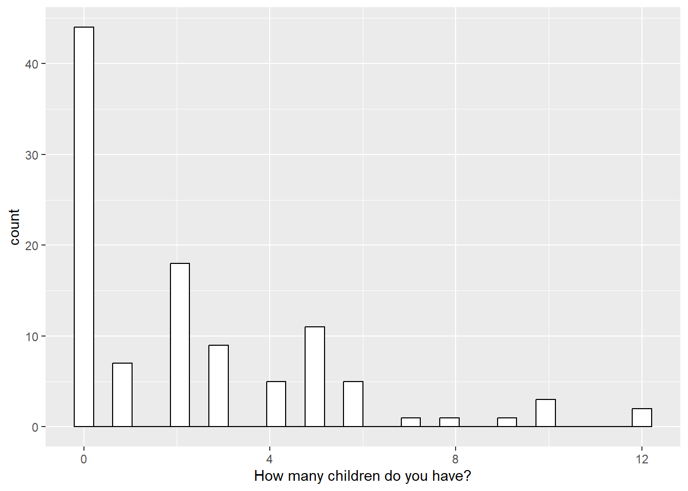

9 Visualization
9.1 Bar chart
A bar chart is a representation of numerical data in pictorial form of rectangles (or bars) having uniform width and varying heights.” They are also known as bar graphs.
#construction of the dataframe
data_barchart <- as.data.frame(table(data_1$`What is your religion?`))
data_barchart <- data_barchart %>%
dplyr::mutate(percentage = round(100*(Freq/sum(Freq)),2),
pct1 = paste0(percentage, "%")) %>%
rename(Religion=Var1)
#plot the bar chart
plotly::plot_ly(data_barchart, x = ~Religion,
type = "bar",
y = ~percentage,
marker = list(color = "#318CE7"),
text = paste(data_barchart$pct1, sep = ""), textposition = 'outside') %>%
layout(title = "Number of persons by religion"
)9.2 Pie chart
A pie chart is a type of graph representing data in a circular form, with each slice of the circle representing a fraction or proportionate part of the whole.
#construction of the dataframe
data_piechart <- as.data.frame(table(data_1$Sex))
data_piechart <- data_piechart %>%
dplyr::mutate(percentage = round(100*(Freq/sum(Freq)),2),
pct1 = paste0(percentage, "%"))
#plot the pie chart
plotly::plot_ly(data_piechart, labels= ~Var1,
values= ~Freq, type="pie",
hoverinfo = 'text',
textinfo = 'label+percent',
insidetextfont = list(color = '#FFFFFF'),
text = ~paste("Sex :",Var1,
"<br>Number of persons :", Freq,
"<br>Percentage :", pct1),
marker = list(colors = c("#318CE7", "#89CFF0"),
line = list(color = '#FFFFFF', width = 1),showlegend = FALSE)) %>%
layout(title="",
xaxis = list(showgrid = FALSE, zeroline = FALSE, showticklabels = FALSE),
yaxis = list(showgrid = FALSE, zeroline = FALSE, showticklabels = FALSE))9.3 Histogram
A histogram is a chart that plots the distribution of a numeric variable’s values as a series of bars. Each bar typically covers a range of numeric values called a bin or class; a bar’s height indicates the frequency of data points with a value within the corresponding bin.
library(ggplot2)
# Change colors
p<-ggplot(data_1, aes(x=`How many children do you have?`)) +
geom_histogram(color="black", fill="white")
p
#> `stat_bin()` using `bins = 30`. Pick better value with
#> `binwidth`.